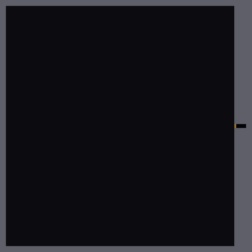
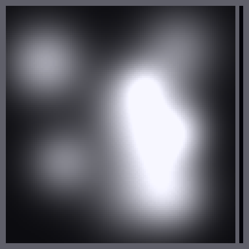
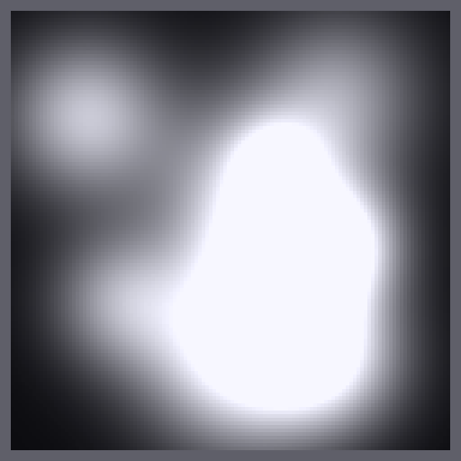
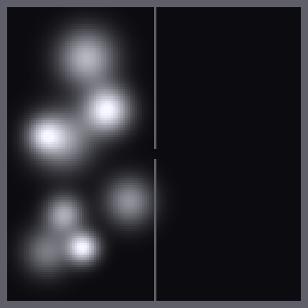

EOS Phase-1.2 — rung A vs rung B vs control
Throwaway numpy spike · grid 128×128 · 120 ticks · dt 83 ms · judged by eye + the cost numbers. These are the real solvers — the artificial placeholder swirl is gone; all motion here is emergent.
What to look for.
control (semi-Lagrangian, ≈ current-model class): incompressible, so it projects the blast away — weak pushback, diffuse, little structure. It's the bar to beat.
rung A (Feldman–O'Brien divergence-controlled): expansion-driven billow — the fireball/water pushes, but curl is weak (no momentum).
rung B (Kwatra semi-implicit): real momentum → emergent curl / rolling vortices (the top-down analogue of a mushroom cap) and a sharper blast front. This is the "one level up" — the question is whether that reads at this coarse grid enough to justify ~1.3× the cost.
Caveats — read before judging S3/S5:
S3's outrush is a scripted inward vent-jet, NOT physics — none of these prototype solvers model the real air↔vacuum pressure differential, so nothing vented on its own. Important: a full rung B (real P = C·N·T) should vent a breach natively (vacuum = genuine low pressure → air accelerates out) — that signature advantage is not shown here.
S5 has NO explosion — the "mushroom cloud" is the water push itself, ×60 amplified (water is only ~0.05% of room volume, so the honest push is invisible). Water flows correctly (verified — no direction bug). Both rungs show it; rung B curls more.
Numpy CPU, not the eventual CUDA kernel.
| scenario | control (the bar) | rung A (expansion) | rung B (momentum/curl) |
|---|
| S1 corridor blastplanar front + reflection |
9.85 ms · 1 sub |
10.15 ms · 1 sub |
12.51 ms · 1.03 sub |
| S2 room + door jetoverpressure → doorway jet |
 9.93 ms · 1 sub |
10.52 ms · 1 sub |
12.79 ms · 1.02 sub |
S3 breach → vacuumsmoke vents toward the breach
(outrush is SCRIPTED — see caveat) |
 retains ~89% smoke |
retains ~88% |
drains most, ~66% |
| S4 fireball over smokeignition inside a cloud |
 9.65 ms · 1 sub |
10.35 ms · 1 sub |
12.25 ms · 1.01 sub |
| S5 water pushes smoketilted ship + burst tank |
 10.63 ms · 1 sub |
10.92 ms · 1 sub |
15.33 ms · 1.91 sub |
Cost headline: rung B is ~1.25–1.45× rung A, worst case 15.3 ms = 18% of the 83 ms budget, substeps 1–2 (never near the 64 cap). The acoustic-CFL fear is retired. The decision is now purely visual: does rung B's curl earn its ~30% cost at Breach's grid?